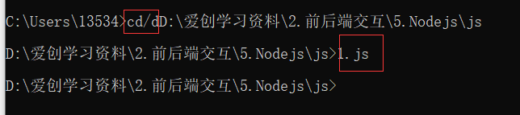
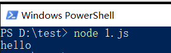

<!DOCTYPE html>
<html lang="en">

<head>
    <meta charset="UTF-8">
    <meta http-equiv="X-UA-Compatible" content="IE=edge">
    <meta name="viewport" content="width=device-width, initial-scale=1.0">
    <title>Document</title>
</head>

<body>
    
    <script>
        //查看已安装的node版本化
        window + R打开终端
        node - v

        //什么是终端？
        // 人机交互的一种方法 专门为开发人员设计的

        //用node执行js代码
        //1.打开终端
        //2.输入node 要执行的js文件的路径
        //  先切换到你的js所处的目录 
        // cd/d目标路径    成功  然后到了目标路径输入你的文件名  
        // 

        要是每次找文件麻烦，就在文件的目录下 shift + 右键 找到 PowerShell
        // 输入 node 1.js回车就可以
        注意 node和文件名中间有空格分割！！！！！！！！！！
        // 

        // 或者直接在你的1.js目录上面地址栏 输入cmd回车 此时就在那个路径下


        //终端中快捷键
        1.使用 ⬆键 ，可以快速定位到上一次执行的命令
        2.使用tab 键，能够快速补全路径
        3.使用esc健，能够快速清空当前已输入的命令
        4.输入cls命令，可以清空终端


    </script>


</body>

</html>